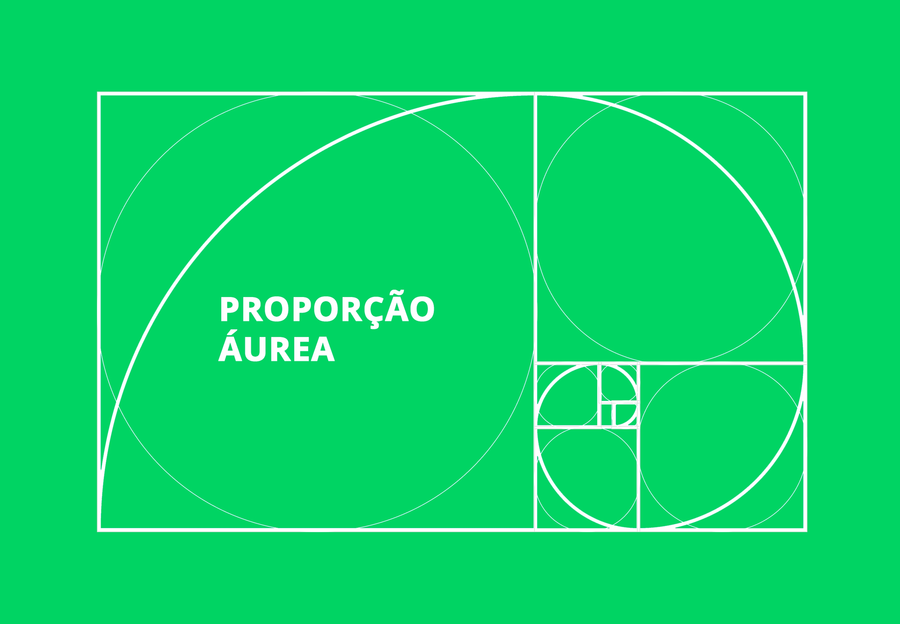

O que é Proporção Áurea?
SubirProporção áurea é uma constante real algébrica irracional. Nós temos a proporção áurea quando dividimos uma reta em duas partes não iguais. Depois, pegamos o segmento mais longo dessa reta e a dividimos pelo segmento menor. Esse resultado será igual ao valor da divisão da reta inteira pelo segmento mais longo.

Onde vemos a Proporção Áurea?
SubirA proporção áurea foi utilizada por vários artistas como Botticelli, Salvador Dalí e Leonardo da Vinci. Sobre o último, é possível observá-la em Monalisa, sua obra mais famosa.
O Número de Ouro:
SubirTambém conhecido como a proporção áurea, ou pela letra grega φ (phi). Este número ganha esse nome de destaque por estar presente em diversos lugares da natureza, no corpo humano e no universo.
Este número, assim como outros, por exemplo o π (Pi), estão presentes no mundo por uma razão matemática existente na natureza.
Essa sequência aparece na natureza, no DNA, no comportamento da refração da luz, dos átomos, nas vibrações sonoras, no crescimento das plantas, nas espirais das galáxias, dos marfins de elefantes, nas ondas no oceano, furacões, etc.